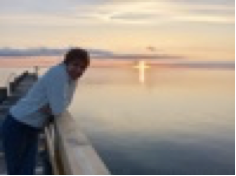

Col.legiada nº 9196 Registrada per la FEAP i la EFPA
TRAJECTORIA
>
-->"Després d'estudiar Psicologia vaig estar experimentant com apropar-me a l'essència de les persones a través de la música, l'art i el moviment. Vaig cursar estudis de postgrau en Psicomotricitat a Alemanya on vaig conèixer a la professora Montse Costa, especialista en mediació terapèutica corporal. Amb la seva guia, vaig treballar a CREI-Mundet (Universitat de Barcelona) com a psicòloga i psicomotricista amb nen@s amb dificultats d'aprenentatge. En aquesta etapa vaig cursar els estudis DEA en gerontologia, i treballava també com a psicòloga en una residència de gent gran i a l'Associació de Malalts i Famliars d'Alzheimer del Baix Llobregat.
L'experiència laboral amb nen@s i gent gran va ser preciosa, em va animar a començar un intens i fructífer procés formatiu en teràpia Gestalt i altres teràpies humanistes (programa SAT amb Claudio Naranjo). D'aquestes experiències em vaig endur grans tresors com ara la vivència del poder transformador del grup terapèutic, i la meditació, una prà que m'ajuda des de llavors.
Immersa en aquest procés d'aprenentatge, les psicòlogues Assumpta Junyent, Maribel Rodríguez i Carmen Cuenca em van obrir les portes a col.laborar com a psicoterapèuta a Cintra Psicologia-Sant Cugat de Vallès. La confiança genera confiança i aviat també vaig obrir la meva pròpia consulta a Barcelona. En aquesta època i durant 3 anys vaig estar treballant com a mestra d'educació especial i orientadora a escoltes i instituts de secundària, una experiència molt enriquidora.
Esdevenir mare em va apropar d'una forma més profunda a la vulnerabilitat i delicadesa de les primeres etapes de la vida. En aquella època vaig treballar per un període de 7 anys atenent persones, majoritàriament dones, amb trastorns de la conducta alimentària al centre ABB de Barcelona (actualment ITA) ajudant-les a construir vincles segurs i a recuperar l'autoestima. I se'm van despertar les ganes de continuar el meu procés formatiu i terapèutic en Psicoteràpia Psicoanalítica. Per part dels professors de l'ACPP vaig rebre tot el suport per anar integrant coneixements i sentir-me compromesa i segura acompanyant les persones que pateixen.
Actualment i des de fa 20 anys, treballo com a psicoterapeuta per compte propi. Col.laboro a SMIC Clínica Sant Jordi i formo part de l'equip de formació de FAPAES.
Contactar:C/Casanova 46, 4rt 1a, Barcelona.
Mb: 696453277
Email: trescoca@gmail.com